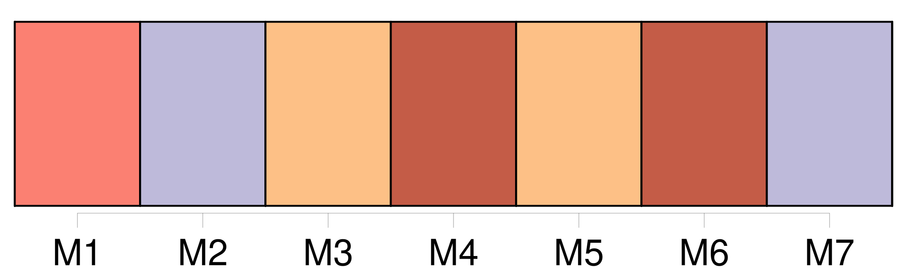
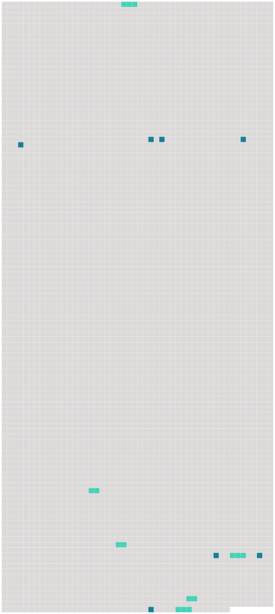

Longueur nb maillons : 13 mentions |
  |
C'est à St-Jean que vécut le jeune ménage pendant cinq années ; c'est à St-Jean que naquit Rosalie, puis [une seconde fille] et un premier fils qui reçurent les noms de Louise et de Juste, c'est là que Charlotte aima, pleura, sourit et souffrit. [54 phrases] [Lisette] , [qui] commence bien à apprendre à lire, a travaillé avec tant de cœur à [sa] leçon, que j'ai été obligée de [la] faire quitter. [136 phrases]
La veille de son mariage, Samuel écrit ce qui suit à Rosalie et à [sa sœur] : [15 phrases] Ce sera l'occasion de vous exercer pour l'écriture et pour l'orthographe dont [Mlle Lisette] a fait beaucoup de fautes dans cette dernière. [4 phrases] [Lis] toujours, [ma chère Lisette] , je [t'] en supplie …… [16 phrases]
Le 7 décembre, quatre jours après le départ des voyageuses, son père, toujours soucieux de sa bonne éducation, lui écrivait : [4 phrases] [Ta] bonne petite âme, [ma chère Lisette] , s'y était bien peinte. |
 |
La ressource peut être téléchargée sur la page Ortolang
Si vous avez des questions ou vous voyez des erreurs, merci d'envoyer un mail à silvia.federzoni89@gmail.com
Site développé par S. Federzoni (contact)